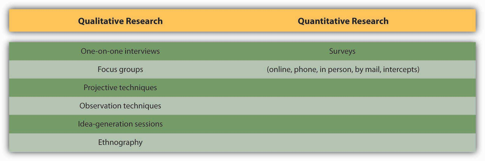

After studying this section, students should be able to do the following:
Data is the key to knowing the customer. An advertiser and its agency can obtain this knowledge from two basic kinds of sources, each with respective advantages and disadvantages. Primary dataNew information gathered directly from respondents the company talks to, surveys, or researches. is new information the company gathers directly from respondents the company talks to, surveys, or researches. Primary research focuses specifically upon the issues that need to be answered to develop the campaign. For example, if a company does a telephone survey of consumers’ opinions of the latest ad campaign, that’s primary research. Although primary data can be expensive to collect, it’s often extremely useful because it’s “just what the doctor ordered” to guide the organization’s thinking.
Figure 5.2 Primary versus Secondary Data

In contrast, secondary dataInformation that has already been collected for a previous purpose, often by a third party; an example is government census data. refers to information that has already been collected for a previous purpose, often by a third party that routinely performs such research. For example, government census data is secondary data—the government collects information about citizens’ household size, ages, and incomes for its own purposes. This information is available free in its raw form, and in addition numerous companies “package” it and sell it in various ways to third parties.
Primary data and secondary data can be either quantitativeData or research results expressed in numeric terms such as averages, percentages, or statistics, usually based on a large-scale sample of respondents. (numerical) or qualitativeData or research results obtained by eliciting stories, anecdotes, and descriptive words that indicate the emotions, attitudes, and values associated with a product. (verbal). Quantitative research is usually based on a large-scale sample of respondents and is typically expressed in numeric terms such as averages, percentages, or statistics. The advantage of quantitative research is its precision in providing a specific answer, such as the number of pizzas sold in March or the percentage of people who say they plan to buy a product in the next three months.
Figure 5.3 Qualitative versus quantitative data
Qualitative research is more open ended in eliciting the stories, anecdotes, and descriptive words people have for products or lifestyle attributes. For example, a survey might ask people to describe a product they see in an ad; the advertiser can then analyze the words and emotions those responses contain. Qualitative data tend to be useful for exploratory work and to help “flesh out” the emotions, attitudes, and values behind the numbers.
SS+K’s first step in getting to know msnbc.com was to review the existing research the client had already done around their branding, audience, and features. John Richardson and Michelle Rowley immersed themselves in the data provided in order to understand what msnbc.com’s current research was telling them. By reviewing this research first, they were able to identify what information they still needed so they could gain a better understanding of the brand and the audience.
We broadly describe data along two dimensions: source and type. Source refers to where we obtain the information. Here the important distinction is between primary data that we collect specifically to guide the current campaign and secondary data that already exists in some form. Primary data is often preferable but harder and more expensive to collect; in some cases the information we need is out there if we know where to look. Type refers to the form of the data; is it numerical or verbal or observational? Numerical (quantitative) data can be generalized; we can combine one respondent’s scores with those of many others to obtain a broad (but often shallow) picture. In contrast, verbal or observation (qualitative) data is difficult to generalize because it’s coded in words or based upon a researcher’s subjective impressions. This type of data is useful for generating ideas and drilling down into the underlying reasons for consumers’ reactions to ads or products; it gives us a narrow but deep picture. The ideal is to combine both types of data to yield a broad and deep snapshot of our customers.
Compare primary data to secondary data. Compare quantitative data to qualitative data.